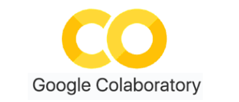
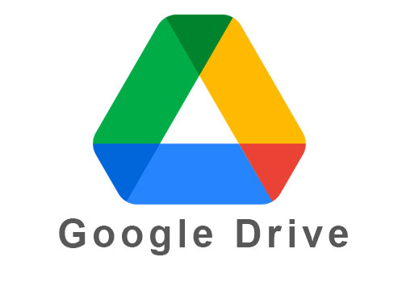
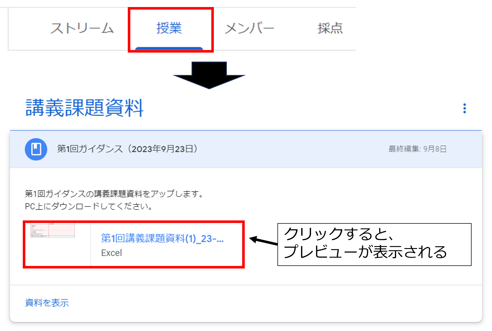
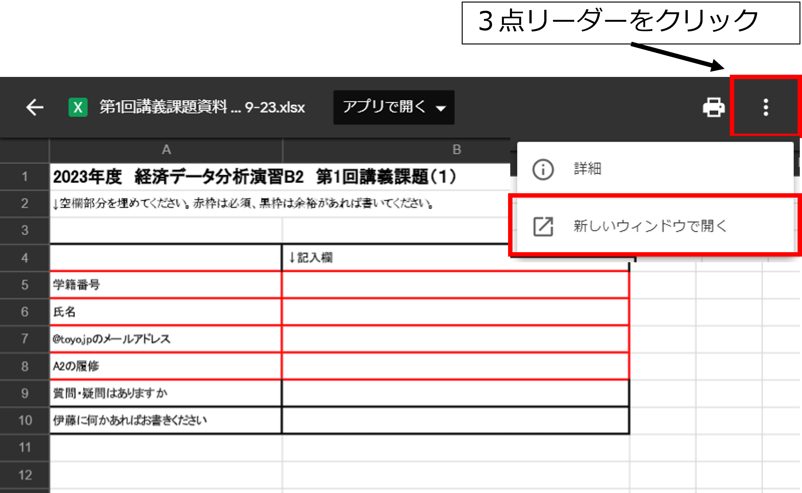
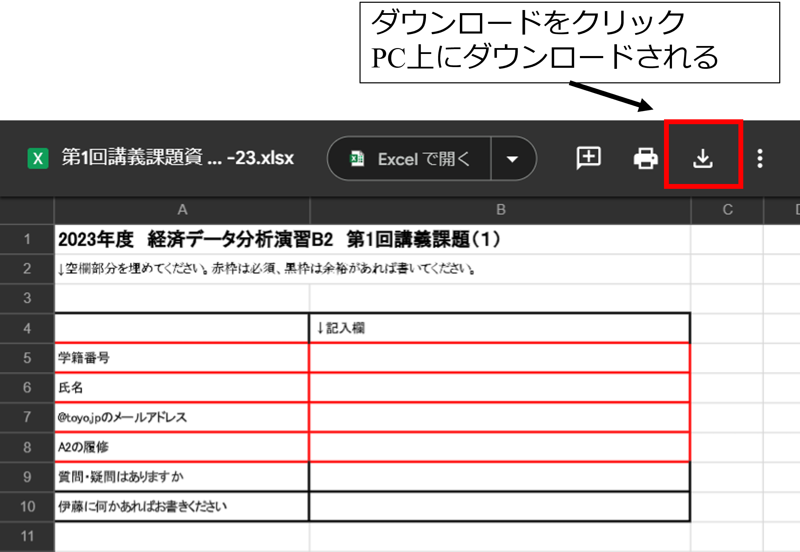
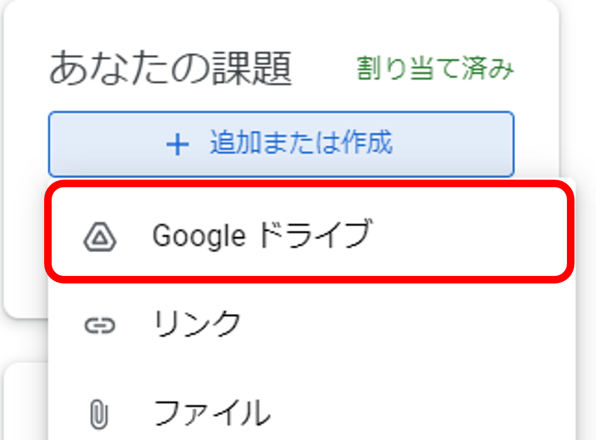
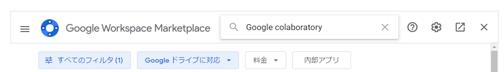
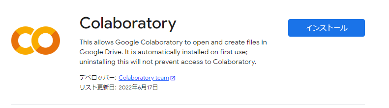
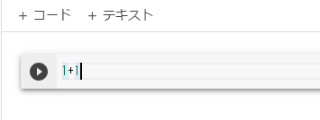

第1回 ガイダンス
2026年度 経済データ分析演習B2
2026-10-03
はじめに
本コースは、経済データ分析演習B2（担当：伊藤）です
- 誤って登録している場合は、追加登録期間中に履修登録を修正してください
- ただ、春学期からコースを変更することも可能です
- 出席カードは13:00から14:30までに登録してください
出席カード
760439
- Google Classroomへの登録：https://classroom.google.com/c/ODg2MjQzNjUzMTk4?cjc=j4osjaqj
クラスコード
j4osjaqj
シラバス
シラバス：https://classroom.google.com/u/2/c/ODg2MjQzNjUzMTk4/m/ODkwMTI3OTE2OTM0/details
今回の目標
- Google Classroomに登録し、ファイルのダウンロード、課題の提出をする
- Google Driveに講義のフォルダを作成する
- Google ColaboratoryをGoogle Driveにインストールし、ファイルを作成できるようになる
- 講義アーカイブの受講方法
Google Classroom
本学期では、Classroomを使用して、講義資料、講義課題、連絡事項はこちらを通じて行います。

- こちらの連絡事項なども”@toyo.jp“に届くので、こまめにメールが来ているか確認してください
講義の進め方
- 本講義は春学期と比べてハードです
- そこで、以下のような講義スタイルを取ります
講義動画
- 各回、15分程度の講義動画をアップします（これまでの使いまわしなので、細かい部分は注意！）
- 親科目を補足するために使ってください
レクチャー動画
- 本講義ではRというプログラミング言語を使用します
- テクニカルな部分が高度なので、15分程度のレクチャー動画をアップします
講義資料
- 講義資料はhtmlで公開します
- 講義資料だけでも内容・課題は取り組めます
講義の受け方
- 本講義は皆さんの事前受講を前提としています
動画
- 動画はスマホやタブレットで見ることを推奨します
- パソコンでは講義資料やR (Colabratory)を開いて受講してください
受け方
- 講義までに講義資料と/あるいは動画を見ておいてください
- 講義は基本的には講義課題を取り組む時間とします
- 事前学習に1時間程度取り組んでもらうことを想定しています
- ただ、人によっては講義資料だけでも講義課題に取り組めます
- 動画は全てアーカイブされます
R & RStudio
- 本学期では、Rを用いてデータ分析をしていく
- 実際は、Google colaboratoryを通じてRを実行するが、一応RとRStudioをダウンロードする
R - 文字でコマンドを入力するフリーソフトウェア
- 文字コマンドを入力することで機能を実行させる
- Excelよりも高度でかつ最新のパッケージを使える
RStudio - Rの補助ソフトウェア
- Rをそのまま使うよりも使いやすくなる
- 補助的な機能が多数ある
- Rをダウンロードしていないと使えない
R & RStudioのダウンロード
ダウンロードは、経済データ分析演習B1の岡本先生の資料が非常に分かりやすいので、利用させていただきます 補足資料：https://classroom.google.com/u/2/c/ODg2MjQzNjUzMTk4/m/ODkwMTI3OTE2OTM0/details
- 本講義と2年次の隅田先生の「統計分析」ではColaboratoryを使用するので、ダウンロードなどは必須でありません。
- Rについてより勉強したい人はダウンロードしてみてください
Google colaboratory
- Googleが提供する「Python」を実行するためのサービス
- Rも（無理やり）利用することが可能
- データやパッケージなどもGoogle Driveに保存される
- インターネットに接続できれば、どこでも常に同じ環境で作業することができる

Google Driveの利用
- Google ClassroomやGoogle colaboratoryを利用
- ファイルは自身のGoogle Driveに保存、あるいはDriveからアップロード可能
- “@toyo.jp”のアカウントからGoogle Driveにログインする

Google Driveでのフォルダ作成
- Google Drive上に「Classroom」→「経済データ分析演習B2」というフォルダがあることを確認
- 作成したファイルをGoogle Driveにアップロード
- Google Classroomの課題をGoogle Driveからアップロードすることが可能
- Colabで使用するデータも分析した結果もDriveに読み込み・書き出しが可能
Google Classroomからファイルをダウンロード
- Classroomから講義資料を確認
- ダウンロードするファイルをクリック
- プレビューが表示される

- プレビュー右上の3点リーダーをクリック
- 「新しいウィンドウで開く」をクリック

ファイルのダウンロード
- 新しいウィンドウでプレビューが表示
- 右上のほうに、新たにダウンロードタブが表示される
- ダウンロードをクリック
- PC上の「ダウンロード」ファイルにファイルがダウンロードされている

第1回講義課題(1)
講義課題 - Google Classroomから講義課題資料をダウンロード
第1回講義課題(1)
- ダウンロードしたExcelファイルに記入してください
- ファイル名を「第1回_学籍番号_氏名」としてください
- 例）第1回_1220YY0XXX_伊藤翼（アンダーバーは半角）
- Google Driveの講義フォルダにアップロードしてください
- Google Classroomの講義課題から第1回講義課題(1)に提出してください

Google colaboratoryのインストール
Google colaboratoryはアプリを追加しなければ使用できない
- Google Driveの左上「新規」から、一番下の「その他」をクリック
- 一番下のアプリを追加をクリック
- 検索欄に「Google colaboratory」と入力

- Google colaboratoryをクリック
- インストールしてください
- インストールの準備の「続行」をクリック
- “@toyo.jp”のアカウントをクリック

Google colaboratoryの利用
Google Driveの「新規」→「その他」からGoogle colaboratoryを選択
左上の「Untitled0.ipynb」を「第1回_学籍番号_氏名.ipynb」に変更
コード入力欄に「1＋1」と入力し、左の三角で実行

mathをインポートして、平方根の計算
import math
val = math.sqrt(2)
print(val)- 左上のテキストをクリックし、今日の感想を入力
- 自動保存されるので、終わる場合はタブを閉じれば良い
本日の講義課題の提出
講義課題 - 作成したGoogle colaboratoryのファイルを提出
- ファイル名が正しいかチェック
- Google Classroomの講義課題から、第1回講義課題(2)を開き、
- 先ほど手順でGoogle colaboratoryのファイルを提出